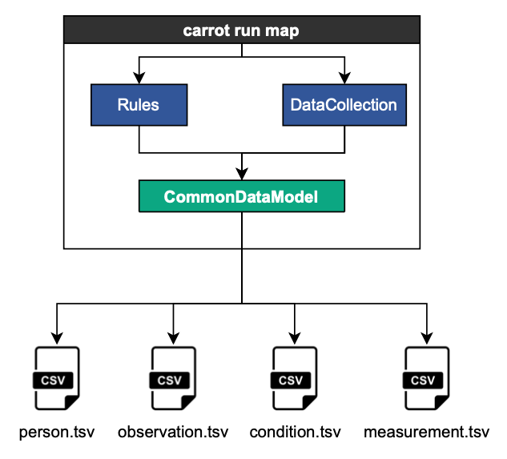

Part 2 Command Line
There are many available commands, many are decrepit or used for testing
!carrot --help
Usage: carrot [OPTIONS] COMMAND [ARGS]...
Options:
-v, --version
-l, --log-level [0|1|2|3] change the level for log messaging. 0 - ERROR, 1
- WARNING, 2 - INFO (default), 3 - DEBUG
-cp, --cprofile use cProfile to profile the tool
--help Show this message and exit.
Commands:
airflow Command group for configuring runs with airflow
display Commands for displaying various types of data and files.
etl Command group for running the full ETL of a dataset
generate Commands to generate helpful files.
get Commands to get data from the CCOM api.
info Commands to find information about the package.
pseudonymise Command to help pseudonymise data.
run Commands for mapping data to the OMOP CommonDataModel (CDM).
search Commands for search/help with mapping
T-Tool¶
aka Transform Tool aka Map Tool aka the thing that does input data + rules = CDM data
It is a wrapper that builds the various python instances to perform simple mapping given rules and csv files:

Typical way of running:
!carrot run map --rules ../data/rules.json --output-folder ./temp/1/ ../data/part1/*.csv
2022-06-17 14:48:43 - LocalDataCollection - INFO - DataCollection Object Created
2022-06-17 14:48:43 - LocalDataCollection - INFO - Registering Demographics.csv [<carrot.io.common.DataBrick object at 0x10e414d90>]
2022-06-17 14:48:43 - LocalDataCollection - INFO - Registering GP_Records.csv [<carrot.io.common.DataBrick object at 0x10e414c10>]
2022-06-17 14:48:43 - LocalDataCollection - INFO - Registering Hospital_Visit.csv [<carrot.io.common.DataBrick object at 0x10e414fd0>]
2022-06-17 14:48:43 - LocalDataCollection - INFO - Registering Serology.csv [<carrot.io.common.DataBrick object at 0x10e414b50>]
2022-06-17 14:48:43 - LocalDataCollection - INFO - Registering Symptoms.csv [<carrot.io.common.DataBrick object at 0x10e414c70>]
2022-06-17 14:48:43 - LocalDataCollection - INFO - Registering Vaccinations.csv [<carrot.io.common.DataBrick object at 0x10e45e6d0>]
2022-06-17 14:48:43 - LocalDataCollection - INFO - DataCollection Object Created
2022-06-17 14:48:43 - CommonDataModel - INFO - CommonDataModel (5.3.1) created with co-connect-tools version 0.0.0
2022-06-17 14:48:43 - CommonDataModel - INFO - Running with an DataCollection object
2022-06-17 14:48:43 - CommonDataModel - INFO - Turning on automatic cdm column filling
2022-06-17 14:48:43 - CommonDataModel - INFO - Added MALE 3025 of type person
2022-06-17 14:48:43 - CommonDataModel - INFO - Added FEMALE 3026 of type person
2022-06-17 14:48:43 - CommonDataModel - INFO - Added Antibody 3027 of type observation
2022-06-17 14:48:43 - CommonDataModel - INFO - Added H/O: heart failure 3043 of type observation
2022-06-17 14:48:43 - CommonDataModel - INFO - Added 2019-nCoV 3044 of type observation
2022-06-17 14:48:43 - CommonDataModel - INFO - Added Cancer 3045 of type observation
2022-06-17 14:48:43 - CommonDataModel - INFO - Added Headache 3028 of type condition_occurrence
2022-06-17 14:48:43 - CommonDataModel - INFO - Added Fatigue 3029 of type condition_occurrence
2022-06-17 14:48:43 - CommonDataModel - INFO - Added Dizziness 3030 of type condition_occurrence
2022-06-17 14:48:43 - CommonDataModel - INFO - Added Cough 3031 of type condition_occurrence
2022-06-17 14:48:43 - CommonDataModel - INFO - Added Fever 3032 of type condition_occurrence
2022-06-17 14:48:43 - CommonDataModel - INFO - Added Muscle pain 3033 of type condition_occurrence
2022-06-17 14:48:43 - CommonDataModel - INFO - Added Pneumonia 3042 of type condition_occurrence
2022-06-17 14:48:43 - CommonDataModel - INFO - Added Mental health problem 3046 of type condition_occurrence
2022-06-17 14:48:43 - CommonDataModel - INFO - Added Mental disorder 3047 of type condition_occurrence
2022-06-17 14:48:43 - CommonDataModel - INFO - Added Type 2 diabetes mellitus 3048 of type condition_occurrence
2022-06-17 14:48:43 - CommonDataModel - INFO - Added Ischemic heart disease 3049 of type condition_occurrence
2022-06-17 14:48:43 - CommonDataModel - INFO - Added Hypertensive disorder 3050 of type condition_occurrence
2022-06-17 14:48:43 - CommonDataModel - INFO - Added COVID-19 vaccine 3034 of type drug_exposure
2022-06-17 14:48:43 - CommonDataModel - INFO - Added COVID-19 vaccine 3035 of type drug_exposure
2022-06-17 14:48:43 - CommonDataModel - INFO - Added COVID-19 vaccine 3036 of type drug_exposure
2022-06-17 14:48:43 - CommonDataModel - INFO - Added SARS-CoV-2 (COVID-19) vaccine, mRNA-1273 0.2 MG/ML Injectable Suspension 3040 of type drug_exposure
2022-06-17 14:48:43 - CommonDataModel - INFO - Added SARS-CoV-2 (COVID-19) vaccine, mRNA-BNT162b2 0.1 MG/ML Injectable Suspension 3041 of type drug_exposure
2022-06-17 14:48:43 - CommonDataModel - INFO - Starting processing in order: ['person', 'observation', 'condition_occurrence', 'drug_exposure']
2022-06-17 14:48:43 - CommonDataModel - INFO - Number of objects to process for each table...
{
"person": 2,
"observation": 4,
"condition_occurrence": 12,
"drug_exposure": 5
}
2022-06-17 14:48:43 - CommonDataModel - INFO - for person: found 2 objects
2022-06-17 14:48:43 - CommonDataModel - INFO - working on person
2022-06-17 14:48:43 - CommonDataModel - INFO - starting on MALE 3025
2022-06-17 14:48:43 - Person - INFO - Called apply_rules
2022-06-17 14:48:43 - LocalDataCollection - INFO - Retrieving initial dataframe for 'Demographics.csv' for the first time
could not convert string to float: 'na'
2022-06-17 14:48:43 - Person - INFO - Mapped birth_datetime
2022-06-17 14:48:43 - Person - INFO - Mapped gender_concept_id
2022-06-17 14:48:43 - Person - INFO - Mapped gender_source_concept_id
2022-06-17 14:48:43 - Person - INFO - Mapped gender_source_value
2022-06-17 14:48:43 - Person - INFO - Mapped person_id
2022-06-17 14:48:43 - Person - WARNING - Requiring non-null values in gender_concept_id removed 438 rows, leaving 562 rows.
2022-06-17 14:48:43 - Person - WARNING - Requiring non-null values in birth_datetime removed 1 rows, leaving 561 rows.
2022-06-17 14:48:43 - Person - INFO - Automatically formatting data columns.
2022-06-17 14:48:44 - Person - INFO - created df (0x10e504f10)[MALE_3025]
2022-06-17 14:48:44 - CommonDataModel - INFO - finished MALE 3025 (0x10e504f10) ... 1/2 completed, 561 rows
2022-06-17 14:48:44 - LocalDataCollection - INFO - saving person_ids to ./temp/1//person_ids.tsv
2022-06-17 14:48:44 - LocalDataCollection - INFO - finished save to file
2022-06-17 14:48:44 - CommonDataModel - INFO - saving dataframe (0x10e504f10) to <carrot.io.plugins.local.LocalDataCollection object at 0x10e414970>
2022-06-17 14:48:44 - LocalDataCollection - INFO - saving person to ./temp/1//person.tsv
2022-06-17 14:48:44 - LocalDataCollection - INFO - finished save to file
2022-06-17 14:48:44 - CommonDataModel - INFO - starting on FEMALE 3026
2022-06-17 14:48:44 - Person - INFO - Called apply_rules
could not convert string to float: 'na'
2022-06-17 14:48:44 - Person - INFO - Mapped birth_datetime
2022-06-17 14:48:44 - Person - INFO - Mapped gender_concept_id
2022-06-17 14:48:44 - Person - INFO - Mapped gender_source_concept_id
2022-06-17 14:48:44 - Person - INFO - Mapped gender_source_value
2022-06-17 14:48:44 - Person - INFO - Mapped person_id
2022-06-17 14:48:44 - Person - WARNING - Requiring non-null values in gender_concept_id removed 565 rows, leaving 435 rows.
2022-06-17 14:48:44 - Person - INFO - Automatically formatting data columns.
2022-06-17 14:48:44 - Person - INFO - created df (0x10e596b20)[FEMALE_3026]
2022-06-17 14:48:44 - CommonDataModel - INFO - finished FEMALE 3026 (0x10e596b20) ... 2/2 completed, 435 rows
2022-06-17 14:48:44 - LocalDataCollection - INFO - updating person_ids in ./temp/1//person_ids.tsv
2022-06-17 14:48:44 - LocalDataCollection - INFO - finished save to file
2022-06-17 14:48:44 - CommonDataModel - INFO - saving dataframe (0x10e596b20) to <carrot.io.plugins.local.LocalDataCollection object at 0x10e414970>
2022-06-17 14:48:44 - LocalDataCollection - INFO - updating person in ./temp/1//person.tsv
2022-06-17 14:48:44 - LocalDataCollection - INFO - finished save to file
2022-06-17 14:48:44 - CommonDataModel - INFO - finalised person on iteration 0 producing 996 rows from 2 tables
2022-06-17 14:48:44 - LocalDataCollection - INFO - Getting next chunk of data
2022-06-17 14:48:44 - LocalDataCollection - INFO - All input files for this object have now been used.
2022-06-17 14:48:44 - LocalDataCollection - INFO - resetting used bricks
2022-06-17 14:48:44 - CommonDataModel - INFO - for observation: found 4 objects
2022-06-17 14:48:44 - CommonDataModel - INFO - working on observation
2022-06-17 14:48:44 - CommonDataModel - INFO - starting on Antibody 3027
2022-06-17 14:48:44 - Observation - INFO - Called apply_rules
2022-06-17 14:48:44 - LocalDataCollection - INFO - Retrieving initial dataframe for 'Serology.csv' for the first time
2022-06-17 14:48:44 - Observation - INFO - Mapped observation_concept_id
2022-06-17 14:48:44 - Observation - INFO - Mapped observation_datetime
2022-06-17 14:48:44 - Observation - INFO - Mapped observation_source_concept_id
2022-06-17 14:48:44 - Observation - INFO - Mapped observation_source_value
2022-06-17 14:48:44 - Observation - INFO - Mapped person_id
2022-06-17 14:48:44 - Observation - INFO - Automatically formatting data columns.
2022-06-17 14:48:44 - Observation - INFO - created df (0x10e596b20)[Antibody_3027]
2022-06-17 14:48:44 - CommonDataModel - INFO - finished Antibody 3027 (0x10e596b20) ... 1/4 completed, 413 rows
2022-06-17 14:48:44 - CommonDataModel - ERROR - There are person_ids in this table that are not in the output person table!
2022-06-17 14:48:44 - CommonDataModel - ERROR - Either they are not in the original data, or while creating the person table,
2022-06-17 14:48:44 - CommonDataModel - ERROR - studies have been removed due to lack of required fields, such as birthdate.
2022-06-17 14:48:44 - CommonDataModel - ERROR - 410/413 were good, 3 studies are removed.
2022-06-17 14:48:44 - CommonDataModel - INFO - saving dataframe (0x10e596b20) to <carrot.io.plugins.local.LocalDataCollection object at 0x10e414970>
2022-06-17 14:48:44 - LocalDataCollection - INFO - saving observation to ./temp/1//observation.tsv
2022-06-17 14:48:44 - LocalDataCollection - INFO - finished save to file
2022-06-17 14:48:44 - CommonDataModel - INFO - starting on H/O: heart failure 3043
2022-06-17 14:48:44 - Observation - INFO - Called apply_rules
2022-06-17 14:48:44 - LocalDataCollection - INFO - Retrieving initial dataframe for 'Hospital_Visit.csv' for the first time
2022-06-17 14:48:44 - Observation - INFO - Mapped observation_concept_id
2022-06-17 14:48:44 - Observation - INFO - Mapped observation_datetime
2022-06-17 14:48:44 - Observation - INFO - Mapped observation_source_concept_id
2022-06-17 14:48:44 - Observation - INFO - Mapped observation_source_value
2022-06-17 14:48:44 - Observation - INFO - Mapped person_id
2022-06-17 14:48:44 - Observation - WARNING - Requiring non-null values in observation_concept_id removed 937 rows, leaving 263 rows.
2022-06-17 14:48:44 - Observation - INFO - Automatically formatting data columns.
2022-06-17 14:48:44 - Observation - INFO - created df (0x10e5a0910)[H_O_heart_failure_3043]
2022-06-17 14:48:44 - CommonDataModel - INFO - finished H/O: heart failure 3043 (0x10e5a0910) ... 2/4 completed, 263 rows
2022-06-17 14:48:44 - CommonDataModel - ERROR - There are person_ids in this table that are not in the output person table!
2022-06-17 14:48:44 - CommonDataModel - ERROR - Either they are not in the original data, or while creating the person table,
2022-06-17 14:48:44 - CommonDataModel - ERROR - studies have been removed due to lack of required fields, such as birthdate.
2022-06-17 14:48:44 - CommonDataModel - ERROR - 262/263 were good, 1 studies are removed.
2022-06-17 14:48:44 - CommonDataModel - INFO - saving dataframe (0x10e5a0910) to <carrot.io.plugins.local.LocalDataCollection object at 0x10e414970>
2022-06-17 14:48:44 - LocalDataCollection - INFO - updating observation in ./temp/1//observation.tsv
2022-06-17 14:48:44 - LocalDataCollection - INFO - finished save to file
2022-06-17 14:48:44 - CommonDataModel - INFO - starting on 2019-nCoV 3044
2022-06-17 14:48:44 - Observation - INFO - Called apply_rules
2022-06-17 14:48:44 - Observation - INFO - Mapped observation_concept_id
2022-06-17 14:48:44 - Observation - INFO - Mapped observation_datetime
2022-06-17 14:48:44 - Observation - INFO - Mapped observation_source_concept_id
2022-06-17 14:48:44 - Observation - INFO - Mapped observation_source_value
2022-06-17 14:48:44 - Observation - INFO - Mapped person_id
2022-06-17 14:48:44 - Observation - WARNING - Requiring non-null values in observation_concept_id removed 1023 rows, leaving 177 rows.
2022-06-17 14:48:44 - Observation - INFO - Automatically formatting data columns.
2022-06-17 14:48:44 - Observation - INFO - created df (0x10e5a0190)[2019_nCoV_3044]
2022-06-17 14:48:44 - CommonDataModel - INFO - finished 2019-nCoV 3044 (0x10e5a0190) ... 3/4 completed, 177 rows
2022-06-17 14:48:44 - CommonDataModel - ERROR - There are person_ids in this table that are not in the output person table!
2022-06-17 14:48:44 - CommonDataModel - ERROR - Either they are not in the original data, or while creating the person table,
2022-06-17 14:48:44 - CommonDataModel - ERROR - studies have been removed due to lack of required fields, such as birthdate.
2022-06-17 14:48:44 - CommonDataModel - ERROR - 176/177 were good, 1 studies are removed.
2022-06-17 14:48:44 - CommonDataModel - INFO - saving dataframe (0x10e5a0190) to <carrot.io.plugins.local.LocalDataCollection object at 0x10e414970>
2022-06-17 14:48:44 - LocalDataCollection - INFO - updating observation in ./temp/1//observation.tsv
2022-06-17 14:48:44 - LocalDataCollection - INFO - finished save to file
2022-06-17 14:48:44 - CommonDataModel - INFO - starting on Cancer 3045
2022-06-17 14:48:44 - Observation - INFO - Called apply_rules
2022-06-17 14:48:44 - Observation - INFO - Mapped observation_concept_id
2022-06-17 14:48:44 - Observation - INFO - Mapped observation_datetime
2022-06-17 14:48:44 - Observation - INFO - Mapped observation_source_concept_id
2022-06-17 14:48:44 - Observation - INFO - Mapped observation_source_value
2022-06-17 14:48:44 - Observation - INFO - Mapped person_id
2022-06-17 14:48:44 - Observation - WARNING - Requiring non-null values in observation_concept_id removed 851 rows, leaving 349 rows.
2022-06-17 14:48:44 - Observation - INFO - Automatically formatting data columns.
2022-06-17 14:48:45 - Observation - INFO - created df (0x10e5cc8e0)[Cancer_3045]
2022-06-17 14:48:45 - CommonDataModel - INFO - finished Cancer 3045 (0x10e5cc8e0) ... 4/4 completed, 349 rows
2022-06-17 14:48:45 - CommonDataModel - INFO - saving dataframe (0x10e5cc8e0) to <carrot.io.plugins.local.LocalDataCollection object at 0x10e414970>
2022-06-17 14:48:45 - LocalDataCollection - INFO - updating observation in ./temp/1//observation.tsv
2022-06-17 14:48:45 - LocalDataCollection - INFO - finished save to file
2022-06-17 14:48:45 - CommonDataModel - INFO - finalised observation on iteration 0 producing 1197 rows from 4 tables
2022-06-17 14:48:45 - LocalDataCollection - INFO - Getting next chunk of data
2022-06-17 14:48:45 - LocalDataCollection - INFO - All input files for this object have now been used.
2022-06-17 14:48:45 - LocalDataCollection - INFO - resetting used bricks
2022-06-17 14:48:45 - CommonDataModel - INFO - for condition_occurrence: found 12 objects
2022-06-17 14:48:45 - CommonDataModel - INFO - working on condition_occurrence
2022-06-17 14:48:45 - CommonDataModel - INFO - starting on Headache 3028
2022-06-17 14:48:45 - ConditionOccurrence - INFO - Called apply_rules
2022-06-17 14:48:45 - LocalDataCollection - INFO - Retrieving initial dataframe for 'Symptoms.csv' for the first time
2022-06-17 14:48:45 - ConditionOccurrence - INFO - Mapped condition_concept_id
2022-06-17 14:48:45 - ConditionOccurrence - INFO - Mapped condition_end_datetime
2022-06-17 14:48:45 - ConditionOccurrence - INFO - Mapped condition_source_concept_id
2022-06-17 14:48:45 - ConditionOccurrence - INFO - Mapped condition_source_value
2022-06-17 14:48:45 - ConditionOccurrence - INFO - Mapped condition_start_datetime
2022-06-17 14:48:45 - ConditionOccurrence - INFO - Mapped person_id
2022-06-17 14:48:45 - ConditionOccurrence - WARNING - Requiring non-null values in condition_concept_id removed 55 rows, leaving 275 rows.
2022-06-17 14:48:45 - ConditionOccurrence - WARNING - Requiring non-null values in condition_start_datetime removed 1 rows, leaving 274 rows.
2022-06-17 14:48:45 - ConditionOccurrence - INFO - Automatically formatting data columns.
2022-06-17 14:48:45 - ConditionOccurrence - INFO - created df (0x10e5a7460)[Headache_3028]
2022-06-17 14:48:45 - CommonDataModel - INFO - finished Headache 3028 (0x10e5a7460) ... 1/12 completed, 274 rows
2022-06-17 14:48:45 - CommonDataModel - INFO - saving dataframe (0x10e5a7460) to <carrot.io.plugins.local.LocalDataCollection object at 0x10e414970>
2022-06-17 14:48:45 - LocalDataCollection - INFO - saving condition_occurrence to ./temp/1//condition_occurrence.tsv
2022-06-17 14:48:45 - LocalDataCollection - INFO - finished save to file
2022-06-17 14:48:45 - CommonDataModel - INFO - starting on Fatigue 3029
2022-06-17 14:48:45 - ConditionOccurrence - INFO - Called apply_rules
2022-06-17 14:48:45 - ConditionOccurrence - INFO - Mapped condition_concept_id
2022-06-17 14:48:45 - ConditionOccurrence - INFO - Mapped condition_end_datetime
2022-06-17 14:48:45 - ConditionOccurrence - INFO - Mapped condition_source_concept_id
2022-06-17 14:48:45 - ConditionOccurrence - INFO - Mapped condition_source_value
2022-06-17 14:48:45 - ConditionOccurrence - INFO - Mapped condition_start_datetime
2022-06-17 14:48:45 - ConditionOccurrence - INFO - Mapped person_id
2022-06-17 14:48:45 - ConditionOccurrence - WARNING - Requiring non-null values in condition_concept_id removed 95 rows, leaving 235 rows.
2022-06-17 14:48:45 - ConditionOccurrence - WARNING - Requiring non-null values in condition_start_datetime removed 1 rows, leaving 234 rows.
2022-06-17 14:48:45 - ConditionOccurrence - INFO - Automatically formatting data columns.
2022-06-17 14:48:45 - ConditionOccurrence - INFO - created df (0x10e5d8d00)[Fatigue_3029]
2022-06-17 14:48:45 - CommonDataModel - INFO - finished Fatigue 3029 (0x10e5d8d00) ... 2/12 completed, 234 rows
2022-06-17 14:48:45 - CommonDataModel - INFO - saving dataframe (0x10e5d8d00) to <carrot.io.plugins.local.LocalDataCollection object at 0x10e414970>
2022-06-17 14:48:45 - LocalDataCollection - INFO - updating condition_occurrence in ./temp/1//condition_occurrence.tsv
2022-06-17 14:48:45 - LocalDataCollection - INFO - finished save to file
2022-06-17 14:48:45 - CommonDataModel - INFO - starting on Dizziness 3030
2022-06-17 14:48:45 - ConditionOccurrence - INFO - Called apply_rules
2022-06-17 14:48:45 - ConditionOccurrence - INFO - Mapped condition_concept_id
2022-06-17 14:48:45 - ConditionOccurrence - INFO - Mapped condition_end_datetime
2022-06-17 14:48:45 - ConditionOccurrence - INFO - Mapped condition_source_concept_id
2022-06-17 14:48:45 - ConditionOccurrence - INFO - Mapped condition_source_value
2022-06-17 14:48:45 - ConditionOccurrence - INFO - Mapped condition_start_datetime
2022-06-17 14:48:45 - ConditionOccurrence - INFO - Mapped person_id
2022-06-17 14:48:45 - ConditionOccurrence - WARNING - Requiring non-null values in condition_concept_id removed 195 rows, leaving 135 rows.
2022-06-17 14:48:45 - ConditionOccurrence - WARNING - Requiring non-null values in condition_start_datetime removed 1 rows, leaving 134 rows.
2022-06-17 14:48:45 - ConditionOccurrence - INFO - Automatically formatting data columns.
2022-06-17 14:48:45 - ConditionOccurrence - INFO - created df (0x10e5a0340)[Dizziness_3030]
2022-06-17 14:48:45 - CommonDataModel - INFO - finished Dizziness 3030 (0x10e5a0340) ... 3/12 completed, 134 rows
2022-06-17 14:48:45 - CommonDataModel - INFO - saving dataframe (0x10e5a0340) to <carrot.io.plugins.local.LocalDataCollection object at 0x10e414970>
2022-06-17 14:48:45 - LocalDataCollection - INFO - updating condition_occurrence in ./temp/1//condition_occurrence.tsv
2022-06-17 14:48:45 - LocalDataCollection - INFO - finished save to file
2022-06-17 14:48:45 - CommonDataModel - INFO - starting on Cough 3031
2022-06-17 14:48:45 - ConditionOccurrence - INFO - Called apply_rules
2022-06-17 14:48:45 - ConditionOccurrence - INFO - Mapped condition_concept_id
2022-06-17 14:48:45 - ConditionOccurrence - INFO - Mapped condition_end_datetime
2022-06-17 14:48:45 - ConditionOccurrence - INFO - Mapped condition_source_concept_id
2022-06-17 14:48:45 - ConditionOccurrence - INFO - Mapped condition_source_value
2022-06-17 14:48:45 - ConditionOccurrence - INFO - Mapped condition_start_datetime
2022-06-17 14:48:45 - ConditionOccurrence - INFO - Mapped person_id
2022-06-17 14:48:45 - ConditionOccurrence - WARNING - Requiring non-null values in condition_concept_id removed 100 rows, leaving 230 rows.
2022-06-17 14:48:45 - ConditionOccurrence - WARNING - Requiring non-null values in condition_start_datetime removed 1 rows, leaving 229 rows.
2022-06-17 14:48:45 - ConditionOccurrence - INFO - Automatically formatting data columns.
2022-06-17 14:48:45 - ConditionOccurrence - INFO - created df (0x10e5c29a0)[Cough_3031]
2022-06-17 14:48:45 - CommonDataModel - INFO - finished Cough 3031 (0x10e5c29a0) ... 4/12 completed, 229 rows
2022-06-17 14:48:45 - CommonDataModel - INFO - saving dataframe (0x10e5c29a0) to <carrot.io.plugins.local.LocalDataCollection object at 0x10e414970>
2022-06-17 14:48:45 - LocalDataCollection - INFO - updating condition_occurrence in ./temp/1//condition_occurrence.tsv
2022-06-17 14:48:45 - LocalDataCollection - INFO - finished save to file
2022-06-17 14:48:45 - CommonDataModel - INFO - starting on Fever 3032
2022-06-17 14:48:45 - ConditionOccurrence - INFO - Called apply_rules
2022-06-17 14:48:45 - ConditionOccurrence - INFO - Mapped condition_concept_id
2022-06-17 14:48:45 - ConditionOccurrence - INFO - Mapped condition_end_datetime
2022-06-17 14:48:45 - ConditionOccurrence - INFO - Mapped condition_source_concept_id
2022-06-17 14:48:45 - ConditionOccurrence - INFO - Mapped condition_source_value
2022-06-17 14:48:45 - ConditionOccurrence - INFO - Mapped condition_start_datetime
2022-06-17 14:48:45 - ConditionOccurrence - INFO - Mapped person_id
2022-06-17 14:48:45 - ConditionOccurrence - WARNING - Requiring non-null values in condition_concept_id removed 265 rows, leaving 65 rows.
2022-06-17 14:48:45 - ConditionOccurrence - INFO - Automatically formatting data columns.
2022-06-17 14:48:45 - ConditionOccurrence - INFO - created df (0x10e5c23a0)[Fever_3032]
2022-06-17 14:48:45 - CommonDataModel - INFO - finished Fever 3032 (0x10e5c23a0) ... 5/12 completed, 65 rows
2022-06-17 14:48:45 - CommonDataModel - INFO - saving dataframe (0x10e5c23a0) to <carrot.io.plugins.local.LocalDataCollection object at 0x10e414970>
2022-06-17 14:48:45 - LocalDataCollection - INFO - updating condition_occurrence in ./temp/1//condition_occurrence.tsv
2022-06-17 14:48:45 - LocalDataCollection - INFO - finished save to file
2022-06-17 14:48:45 - CommonDataModel - INFO - starting on Muscle pain 3033
2022-06-17 14:48:45 - ConditionOccurrence - INFO - Called apply_rules
2022-06-17 14:48:45 - ConditionOccurrence - INFO - Mapped condition_concept_id
2022-06-17 14:48:45 - ConditionOccurrence - INFO - Mapped condition_end_datetime
2022-06-17 14:48:45 - ConditionOccurrence - INFO - Mapped condition_source_concept_id
2022-06-17 14:48:45 - ConditionOccurrence - INFO - Mapped condition_source_value
2022-06-17 14:48:45 - ConditionOccurrence - INFO - Mapped condition_start_datetime
2022-06-17 14:48:45 - ConditionOccurrence - INFO - Mapped person_id
2022-06-17 14:48:45 - ConditionOccurrence - WARNING - Requiring non-null values in condition_concept_id removed 295 rows, leaving 35 rows.
2022-06-17 14:48:45 - ConditionOccurrence - WARNING - Requiring non-null values in condition_start_datetime removed 1 rows, leaving 34 rows.
2022-06-17 14:48:45 - ConditionOccurrence - INFO - Automatically formatting data columns.
2022-06-17 14:48:45 - ConditionOccurrence - INFO - created df (0x10e5c4fd0)[Muscle_pain_3033]
2022-06-17 14:48:45 - CommonDataModel - INFO - finished Muscle pain 3033 (0x10e5c4fd0) ... 6/12 completed, 34 rows
2022-06-17 14:48:45 - CommonDataModel - INFO - saving dataframe (0x10e5c4fd0) to <carrot.io.plugins.local.LocalDataCollection object at 0x10e414970>
2022-06-17 14:48:45 - LocalDataCollection - INFO - updating condition_occurrence in ./temp/1//condition_occurrence.tsv
2022-06-17 14:48:46 - LocalDataCollection - INFO - finished save to file
2022-06-17 14:48:46 - CommonDataModel - INFO - starting on Pneumonia 3042
2022-06-17 14:48:46 - ConditionOccurrence - INFO - Called apply_rules
2022-06-17 14:48:46 - LocalDataCollection - INFO - Retrieving initial dataframe for 'Hospital_Visit.csv' for the first time
2022-06-17 14:48:46 - ConditionOccurrence - INFO - Mapped condition_concept_id
2022-06-17 14:48:46 - ConditionOccurrence - INFO - Mapped condition_end_datetime
2022-06-17 14:48:46 - ConditionOccurrence - INFO - Mapped condition_source_concept_id
2022-06-17 14:48:46 - ConditionOccurrence - INFO - Mapped condition_source_value
2022-06-17 14:48:46 - ConditionOccurrence - INFO - Mapped condition_start_datetime
2022-06-17 14:48:46 - ConditionOccurrence - INFO - Mapped person_id
2022-06-17 14:48:46 - ConditionOccurrence - WARNING - Requiring non-null values in condition_concept_id removed 1029 rows, leaving 171 rows.
2022-06-17 14:48:46 - ConditionOccurrence - INFO - Automatically formatting data columns.
2022-06-17 14:48:46 - ConditionOccurrence - INFO - created df (0x10e5d1910)[Pneumonia_3042]
2022-06-17 14:48:46 - CommonDataModel - INFO - finished Pneumonia 3042 (0x10e5d1910) ... 7/12 completed, 171 rows
2022-06-17 14:48:46 - CommonDataModel - INFO - saving dataframe (0x10e5d1910) to <carrot.io.plugins.local.LocalDataCollection object at 0x10e414970>
2022-06-17 14:48:46 - LocalDataCollection - INFO - updating condition_occurrence in ./temp/1//condition_occurrence.tsv
2022-06-17 14:48:46 - LocalDataCollection - INFO - finished save to file
2022-06-17 14:48:46 - CommonDataModel - INFO - starting on Mental health problem 3046
2022-06-17 14:48:46 - ConditionOccurrence - INFO - Called apply_rules
2022-06-17 14:48:46 - LocalDataCollection - INFO - Retrieving initial dataframe for 'GP_Records.csv' for the first time
2022-06-17 14:48:46 - ConditionOccurrence - INFO - Mapped condition_concept_id
2022-06-17 14:48:46 - ConditionOccurrence - INFO - Mapped condition_end_datetime
2022-06-17 14:48:46 - ConditionOccurrence - INFO - Mapped condition_source_concept_id
2022-06-17 14:48:46 - ConditionOccurrence - INFO - Mapped condition_source_value
2022-06-17 14:48:46 - ConditionOccurrence - INFO - Mapped condition_start_datetime
2022-06-17 14:48:46 - ConditionOccurrence - INFO - Mapped person_id
2022-06-17 14:48:46 - ConditionOccurrence - WARNING - Requiring non-null values in condition_concept_id removed 1508 rows, leaving 444 rows.
2022-06-17 14:48:46 - ConditionOccurrence - INFO - Automatically formatting data columns.
2022-06-17 14:48:46 - ConditionOccurrence - INFO - created df (0x10e5e9d60)[Mental_health_problem_3046]
2022-06-17 14:48:46 - CommonDataModel - INFO - finished Mental health problem 3046 (0x10e5e9d60) ... 8/12 completed, 444 rows
2022-06-17 14:48:46 - CommonDataModel - ERROR - There are person_ids in this table that are not in the output person table!
2022-06-17 14:48:46 - CommonDataModel - ERROR - Either they are not in the original data, or while creating the person table,
2022-06-17 14:48:46 - CommonDataModel - ERROR - studies have been removed due to lack of required fields, such as birthdate.
2022-06-17 14:48:46 - CommonDataModel - ERROR - 441/444 were good, 3 studies are removed.
2022-06-17 14:48:46 - CommonDataModel - INFO - saving dataframe (0x10e5e9d60) to <carrot.io.plugins.local.LocalDataCollection object at 0x10e414970>
2022-06-17 14:48:46 - LocalDataCollection - INFO - updating condition_occurrence in ./temp/1//condition_occurrence.tsv
2022-06-17 14:48:46 - LocalDataCollection - INFO - finished save to file
2022-06-17 14:48:46 - CommonDataModel - INFO - starting on Mental disorder 3047
2022-06-17 14:48:46 - ConditionOccurrence - INFO - Called apply_rules
2022-06-17 14:48:46 - ConditionOccurrence - INFO - Mapped condition_concept_id
2022-06-17 14:48:46 - ConditionOccurrence - INFO - Mapped condition_end_datetime
2022-06-17 14:48:46 - ConditionOccurrence - INFO - Mapped condition_source_concept_id
2022-06-17 14:48:46 - ConditionOccurrence - INFO - Mapped condition_source_value
2022-06-17 14:48:46 - ConditionOccurrence - INFO - Mapped condition_start_datetime
2022-06-17 14:48:46 - ConditionOccurrence - INFO - Mapped person_id
2022-06-17 14:48:46 - ConditionOccurrence - WARNING - Requiring non-null values in condition_concept_id removed 1508 rows, leaving 444 rows.
2022-06-17 14:48:46 - ConditionOccurrence - INFO - Automatically formatting data columns.
2022-06-17 14:48:46 - ConditionOccurrence - INFO - created df (0x10e5c20d0)[Mental_disorder_3047]
2022-06-17 14:48:46 - CommonDataModel - INFO - finished Mental disorder 3047 (0x10e5c20d0) ... 9/12 completed, 444 rows
2022-06-17 14:48:46 - CommonDataModel - ERROR - There are person_ids in this table that are not in the output person table!
2022-06-17 14:48:46 - CommonDataModel - ERROR - Either they are not in the original data, or while creating the person table,
2022-06-17 14:48:46 - CommonDataModel - ERROR - studies have been removed due to lack of required fields, such as birthdate.
2022-06-17 14:48:46 - CommonDataModel - ERROR - 441/444 were good, 3 studies are removed.
2022-06-17 14:48:46 - CommonDataModel - INFO - saving dataframe (0x10e5c20d0) to <carrot.io.plugins.local.LocalDataCollection object at 0x10e414970>
2022-06-17 14:48:46 - LocalDataCollection - INFO - updating condition_occurrence in ./temp/1//condition_occurrence.tsv
2022-06-17 14:48:46 - LocalDataCollection - INFO - finished save to file
2022-06-17 14:48:46 - CommonDataModel - INFO - starting on Type 2 diabetes mellitus 3048
2022-06-17 14:48:46 - ConditionOccurrence - INFO - Called apply_rules
2022-06-17 14:48:46 - ConditionOccurrence - INFO - Mapped condition_concept_id
2022-06-17 14:48:46 - ConditionOccurrence - INFO - Mapped condition_end_datetime
2022-06-17 14:48:46 - ConditionOccurrence - INFO - Mapped condition_source_concept_id
2022-06-17 14:48:46 - ConditionOccurrence - INFO - Mapped condition_source_value
2022-06-17 14:48:46 - ConditionOccurrence - INFO - Mapped condition_start_datetime
2022-06-17 14:48:46 - ConditionOccurrence - INFO - Mapped person_id
2022-06-17 14:48:46 - ConditionOccurrence - WARNING - Requiring non-null values in condition_concept_id removed 1688 rows, leaving 264 rows.
2022-06-17 14:48:46 - ConditionOccurrence - INFO - Automatically formatting data columns.
2022-06-17 14:48:46 - ConditionOccurrence - INFO - created df (0x10e61df10)[Type_2_diabetes_mellitus_3048]
2022-06-17 14:48:46 - CommonDataModel - INFO - finished Type 2 diabetes mellitus 3048 (0x10e61df10) ... 10/12 completed, 264 rows
2022-06-17 14:48:46 - CommonDataModel - INFO - saving dataframe (0x10e61df10) to <carrot.io.plugins.local.LocalDataCollection object at 0x10e414970>
2022-06-17 14:48:46 - LocalDataCollection - INFO - updating condition_occurrence in ./temp/1//condition_occurrence.tsv
2022-06-17 14:48:46 - LocalDataCollection - INFO - finished save to file
2022-06-17 14:48:46 - CommonDataModel - INFO - starting on Ischemic heart disease 3049
2022-06-17 14:48:46 - ConditionOccurrence - INFO - Called apply_rules
2022-06-17 14:48:47 - ConditionOccurrence - INFO - Mapped condition_concept_id
2022-06-17 14:48:47 - ConditionOccurrence - INFO - Mapped condition_end_datetime
2022-06-17 14:48:47 - ConditionOccurrence - INFO - Mapped condition_source_concept_id
2022-06-17 14:48:47 - ConditionOccurrence - INFO - Mapped condition_source_value
2022-06-17 14:48:47 - ConditionOccurrence - INFO - Mapped condition_start_datetime
2022-06-17 14:48:47 - ConditionOccurrence - INFO - Mapped person_id
2022-06-17 14:48:47 - ConditionOccurrence - WARNING - Requiring non-null values in condition_concept_id removed 1738 rows, leaving 214 rows.
2022-06-17 14:48:47 - ConditionOccurrence - INFO - Automatically formatting data columns.
2022-06-17 14:48:47 - ConditionOccurrence - INFO - created df (0x10e5d8580)[Ischemic_heart_disease_3049]
2022-06-17 14:48:47 - CommonDataModel - INFO - finished Ischemic heart disease 3049 (0x10e5d8580) ... 11/12 completed, 214 rows
2022-06-17 14:48:47 - CommonDataModel - ERROR - There are person_ids in this table that are not in the output person table!
2022-06-17 14:48:47 - CommonDataModel - ERROR - Either they are not in the original data, or while creating the person table,
2022-06-17 14:48:47 - CommonDataModel - ERROR - studies have been removed due to lack of required fields, such as birthdate.
2022-06-17 14:48:47 - CommonDataModel - ERROR - 213/214 were good, 1 studies are removed.
2022-06-17 14:48:47 - CommonDataModel - INFO - saving dataframe (0x10e5d8580) to <carrot.io.plugins.local.LocalDataCollection object at 0x10e414970>
2022-06-17 14:48:47 - LocalDataCollection - INFO - updating condition_occurrence in ./temp/1//condition_occurrence.tsv
2022-06-17 14:48:47 - LocalDataCollection - INFO - finished save to file
2022-06-17 14:48:47 - CommonDataModel - INFO - starting on Hypertensive disorder 3050
2022-06-17 14:48:47 - ConditionOccurrence - INFO - Called apply_rules
2022-06-17 14:48:47 - ConditionOccurrence - INFO - Mapped condition_concept_id
2022-06-17 14:48:47 - ConditionOccurrence - INFO - Mapped condition_end_datetime
2022-06-17 14:48:47 - ConditionOccurrence - INFO - Mapped condition_source_concept_id
2022-06-17 14:48:47 - ConditionOccurrence - INFO - Mapped condition_source_value
2022-06-17 14:48:47 - ConditionOccurrence - INFO - Mapped condition_start_datetime
2022-06-17 14:48:47 - ConditionOccurrence - INFO - Mapped person_id
2022-06-17 14:48:47 - ConditionOccurrence - WARNING - Requiring non-null values in condition_concept_id removed 1822 rows, leaving 130 rows.
2022-06-17 14:48:47 - ConditionOccurrence - INFO - Automatically formatting data columns.
2022-06-17 14:48:47 - ConditionOccurrence - INFO - created df (0x10e5f7310)[Hypertensive_disorder_3050]
2022-06-17 14:48:47 - CommonDataModel - INFO - finished Hypertensive disorder 3050 (0x10e5f7310) ... 12/12 completed, 130 rows
2022-06-17 14:48:47 - CommonDataModel - INFO - saving dataframe (0x10e5f7310) to <carrot.io.plugins.local.LocalDataCollection object at 0x10e414970>
2022-06-17 14:48:47 - LocalDataCollection - INFO - updating condition_occurrence in ./temp/1//condition_occurrence.tsv
2022-06-17 14:48:47 - LocalDataCollection - INFO - finished save to file
2022-06-17 14:48:47 - CommonDataModel - INFO - finalised condition_occurrence on iteration 0 producing 2630 rows from 12 tables
2022-06-17 14:48:47 - LocalDataCollection - INFO - Getting next chunk of data
2022-06-17 14:48:47 - LocalDataCollection - INFO - All input files for this object have now been used.
2022-06-17 14:48:47 - LocalDataCollection - INFO - resetting used bricks
2022-06-17 14:48:47 - CommonDataModel - INFO - for drug_exposure: found 5 objects
2022-06-17 14:48:47 - CommonDataModel - INFO - working on drug_exposure
2022-06-17 14:48:47 - CommonDataModel - INFO - starting on COVID-19 vaccine 3034
2022-06-17 14:48:47 - DrugExposure - INFO - Called apply_rules
2022-06-17 14:48:47 - LocalDataCollection - INFO - Retrieving initial dataframe for 'Vaccinations.csv' for the first time
2022-06-17 14:48:47 - DrugExposure - INFO - Mapped drug_concept_id
2022-06-17 14:48:47 - DrugExposure - INFO - Mapped drug_exposure_end_datetime
2022-06-17 14:48:47 - DrugExposure - INFO - Mapped drug_exposure_start_datetime
2022-06-17 14:48:47 - DrugExposure - INFO - Mapped drug_source_concept_id
2022-06-17 14:48:47 - DrugExposure - INFO - Mapped drug_source_value
2022-06-17 14:48:47 - DrugExposure - INFO - Mapped person_id
2022-06-17 14:48:47 - DrugExposure - WARNING - Requiring non-null values in drug_concept_id removed 475 rows, leaving 245 rows.
2022-06-17 14:48:47 - DrugExposure - INFO - Automatically formatting data columns.
2022-06-17 14:48:47 - DrugExposure - INFO - created df (0x10e5fe520)[COVID_19_vaccine_3034]
2022-06-17 14:48:47 - CommonDataModel - INFO - finished COVID-19 vaccine 3034 (0x10e5fe520) ... 1/5 completed, 245 rows
2022-06-17 14:48:47 - CommonDataModel - INFO - saving dataframe (0x10e5fe520) to <carrot.io.plugins.local.LocalDataCollection object at 0x10e414970>
2022-06-17 14:48:47 - LocalDataCollection - INFO - saving drug_exposure to ./temp/1//drug_exposure.tsv
2022-06-17 14:48:47 - LocalDataCollection - INFO - finished save to file
2022-06-17 14:48:47 - CommonDataModel - INFO - starting on COVID-19 vaccine 3035
2022-06-17 14:48:47 - DrugExposure - INFO - Called apply_rules
2022-06-17 14:48:47 - DrugExposure - INFO - Mapped drug_concept_id
2022-06-17 14:48:47 - DrugExposure - INFO - Mapped drug_exposure_end_datetime
2022-06-17 14:48:47 - DrugExposure - INFO - Mapped drug_exposure_start_datetime
2022-06-17 14:48:47 - DrugExposure - INFO - Mapped drug_source_concept_id
2022-06-17 14:48:47 - DrugExposure - INFO - Mapped drug_source_value
2022-06-17 14:48:47 - DrugExposure - INFO - Mapped person_id
2022-06-17 14:48:47 - DrugExposure - WARNING - Requiring non-null values in drug_concept_id removed 494 rows, leaving 226 rows.
2022-06-17 14:48:47 - DrugExposure - WARNING - Requiring non-null values in drug_exposure_start_datetime removed 1 rows, leaving 225 rows.
2022-06-17 14:48:47 - DrugExposure - INFO - Automatically formatting data columns.
2022-06-17 14:48:47 - DrugExposure - INFO - created df (0x10e5a09d0)[COVID_19_vaccine_3035]
2022-06-17 14:48:47 - CommonDataModel - INFO - finished COVID-19 vaccine 3035 (0x10e5a09d0) ... 2/5 completed, 225 rows
2022-06-17 14:48:47 - CommonDataModel - ERROR - There are person_ids in this table that are not in the output person table!
2022-06-17 14:48:47 - CommonDataModel - ERROR - Either they are not in the original data, or while creating the person table,
2022-06-17 14:48:47 - CommonDataModel - ERROR - studies have been removed due to lack of required fields, such as birthdate.
2022-06-17 14:48:47 - CommonDataModel - ERROR - 224/225 were good, 1 studies are removed.
2022-06-17 14:48:47 - CommonDataModel - INFO - saving dataframe (0x10e5a09d0) to <carrot.io.plugins.local.LocalDataCollection object at 0x10e414970>
2022-06-17 14:48:47 - LocalDataCollection - INFO - updating drug_exposure in ./temp/1//drug_exposure.tsv
2022-06-17 14:48:47 - LocalDataCollection - INFO - finished save to file
2022-06-17 14:48:47 - CommonDataModel - INFO - starting on COVID-19 vaccine 3036
2022-06-17 14:48:47 - DrugExposure - INFO - Called apply_rules
2022-06-17 14:48:47 - DrugExposure - INFO - Mapped drug_concept_id
2022-06-17 14:48:47 - DrugExposure - INFO - Mapped drug_exposure_end_datetime
2022-06-17 14:48:47 - DrugExposure - INFO - Mapped drug_exposure_start_datetime
2022-06-17 14:48:47 - DrugExposure - INFO - Mapped drug_source_concept_id
2022-06-17 14:48:47 - DrugExposure - INFO - Mapped drug_source_value
2022-06-17 14:48:47 - DrugExposure - INFO - Mapped person_id
2022-06-17 14:48:47 - DrugExposure - WARNING - Requiring non-null values in drug_concept_id removed 471 rows, leaving 249 rows.
2022-06-17 14:48:47 - DrugExposure - INFO - Automatically formatting data columns.
2022-06-17 14:48:47 - DrugExposure - INFO - created df (0x10e5fbd90)[COVID_19_vaccine_3036]
2022-06-17 14:48:48 - CommonDataModel - INFO - finished COVID-19 vaccine 3036 (0x10e5fbd90) ... 3/5 completed, 249 rows
2022-06-17 14:48:48 - CommonDataModel - ERROR - There are person_ids in this table that are not in the output person table!
2022-06-17 14:48:48 - CommonDataModel - ERROR - Either they are not in the original data, or while creating the person table,
2022-06-17 14:48:48 - CommonDataModel - ERROR - studies have been removed due to lack of required fields, such as birthdate.
2022-06-17 14:48:48 - CommonDataModel - ERROR - 248/249 were good, 1 studies are removed.
2022-06-17 14:48:48 - CommonDataModel - INFO - saving dataframe (0x10e5fbd90) to <carrot.io.plugins.local.LocalDataCollection object at 0x10e414970>
2022-06-17 14:48:48 - LocalDataCollection - INFO - updating drug_exposure in ./temp/1//drug_exposure.tsv
2022-06-17 14:48:48 - LocalDataCollection - INFO - finished save to file
2022-06-17 14:48:48 - CommonDataModel - INFO - starting on SARS-CoV-2 (COVID-19) vaccine, mRNA-1273 0.2 MG/ML Injectable Suspension 3040
2022-06-17 14:48:48 - DrugExposure - INFO - Called apply_rules
2022-06-17 14:48:48 - DrugExposure - INFO - Mapped drug_concept_id
2022-06-17 14:48:48 - DrugExposure - INFO - Mapped drug_exposure_end_datetime
2022-06-17 14:48:48 - DrugExposure - INFO - Mapped drug_exposure_start_datetime
2022-06-17 14:48:48 - DrugExposure - INFO - Mapped drug_source_concept_id
2022-06-17 14:48:48 - DrugExposure - INFO - Mapped drug_source_value
2022-06-17 14:48:48 - DrugExposure - INFO - Mapped person_id
2022-06-17 14:48:48 - DrugExposure - WARNING - Requiring non-null values in drug_concept_id removed 475 rows, leaving 245 rows.
2022-06-17 14:48:48 - DrugExposure - INFO - Automatically formatting data columns.
2022-06-17 14:48:48 - DrugExposure - INFO - created df (0x10e5f7ac0)[SARS_CoV_2_COVID_19_vaccine_mRNA_1273_0_2_MG_ML_Injectable_Suspension_3040]
2022-06-17 14:48:48 - CommonDataModel - INFO - finished SARS-CoV-2 (COVID-19) vaccine, mRNA-1273 0.2 MG/ML Injectable Suspension 3040 (0x10e5f7ac0) ... 4/5 completed, 245 rows
2022-06-17 14:48:48 - CommonDataModel - INFO - saving dataframe (0x10e5f7ac0) to <carrot.io.plugins.local.LocalDataCollection object at 0x10e414970>
2022-06-17 14:48:48 - LocalDataCollection - INFO - updating drug_exposure in ./temp/1//drug_exposure.tsv
2022-06-17 14:48:48 - LocalDataCollection - INFO - finished save to file
2022-06-17 14:48:48 - CommonDataModel - INFO - starting on SARS-CoV-2 (COVID-19) vaccine, mRNA-BNT162b2 0.1 MG/ML Injectable Suspension 3041
2022-06-17 14:48:48 - DrugExposure - INFO - Called apply_rules
2022-06-17 14:48:48 - DrugExposure - INFO - Mapped drug_concept_id
2022-06-17 14:48:48 - DrugExposure - INFO - Mapped drug_exposure_end_datetime
2022-06-17 14:48:48 - DrugExposure - INFO - Mapped drug_exposure_start_datetime
2022-06-17 14:48:48 - DrugExposure - INFO - Mapped drug_source_concept_id
2022-06-17 14:48:48 - DrugExposure - INFO - Mapped drug_source_value
2022-06-17 14:48:48 - DrugExposure - INFO - Mapped person_id
2022-06-17 14:48:48 - DrugExposure - WARNING - Requiring non-null values in drug_concept_id removed 471 rows, leaving 249 rows.
2022-06-17 14:48:48 - DrugExposure - INFO - Automatically formatting data columns.
2022-06-17 14:48:48 - DrugExposure - INFO - created df (0x10e623340)[SARS_CoV_2_COVID_19_vaccine_mRNA_BNT162b2_0_1_MG_ML_Injectable_Suspension_3041]
2022-06-17 14:48:48 - CommonDataModel - INFO - finished SARS-CoV-2 (COVID-19) vaccine, mRNA-BNT162b2 0.1 MG/ML Injectable Suspension 3041 (0x10e623340) ... 5/5 completed, 249 rows
2022-06-17 14:48:48 - CommonDataModel - ERROR - There are person_ids in this table that are not in the output person table!
2022-06-17 14:48:48 - CommonDataModel - ERROR - Either they are not in the original data, or while creating the person table,
2022-06-17 14:48:48 - CommonDataModel - ERROR - studies have been removed due to lack of required fields, such as birthdate.
2022-06-17 14:48:48 - CommonDataModel - ERROR - 248/249 were good, 1 studies are removed.
2022-06-17 14:48:48 - CommonDataModel - INFO - saving dataframe (0x10e623340) to <carrot.io.plugins.local.LocalDataCollection object at 0x10e414970>
2022-06-17 14:48:48 - LocalDataCollection - INFO - updating drug_exposure in ./temp/1//drug_exposure.tsv
2022-06-17 14:48:49 - LocalDataCollection - INFO - finished save to file
2022-06-17 14:48:49 - CommonDataModel - INFO - finalised drug_exposure on iteration 0 producing 1210 rows from 5 tables
2022-06-17 14:48:49 - LocalDataCollection - INFO - Getting next chunk of data
2022-06-17 14:48:49 - LocalDataCollection - INFO - All input files for this object have now been used.
2022-06-17 14:48:49 - CommonDataModel - INFO - {
"version": "0.0.0",
"created_by": "calummacdonald",
"created_at": "2022-06-17T134843",
"dataset": "CommonDataModel::FAILED: ExampleV4",
"total_data_processed": {
"person": 996,
"observation": 1197,
"condition_occurrence": 2630,
"drug_exposure": 1210
}
}
!ls ./temp/1/
condition_occurrence.tsv observation.tsv person_ids.tsv
drug_exposure.tsv person.tsv
View other options
!carrot run map --help
Usage: carrot run map [OPTIONS] [INPUTS]...
Perform OMOP Mapping given an json file and a series of input files
INPUTS should be a space separated list of individual input files or
directories (which contain .csv files)
Options:
--rules TEXT input json file containing all the mapping
rules to be applied [required]
--indexing-conf TEXT configuration file to specify how to start
the indexing
--csv-separator [;|:| |,| ] choose a separator to use when dumping
output csv files
--use-profiler turn on saving statistics for profiling CPU
and memory usage
--format-level [0|1|2] Choose the level of formatting to apply on
the output data. 0 - no formatting. 1 -
automatic formatting. 2 (default) - check
formatting (will crash if input data is not
already formatted).
--output-folder TEXT define the output folder where to dump csv
files to
--write-mode [w|a] force the write-mode on existing files
--split-outputs force the output files to be split into
separate files
--allow-missing-data don't crash if there is data tables in rules
file that hasnt been loaded
--database TEXT define the output database where to insert
data into
-nc, --number-of-rows-per-chunk INTEGER
Choose the number of rows (INTEGER) of input
data to load (chunksize). The option 'auto'
will work out the ideal chunksize. Inputing
a value <=0 will turn off data chunking
(default behaviour).
-np, --number-of-rows-to-process INTEGER
the total number of rows to process
--person-id-map TEXT pass the location of a file containing
existing masked person_ids
--db TEXT instead, pass a connection string to a db
--merge-output merge the output into one file
--parse-original-person-id turn off automatic conversion (creation) of
person_id to (as) Integer
--no-fill-missing-columns Turn off automatically filling missing CDM
columns
--log-file TEXT specify a path for a log file
--max-rules INTEGER maximum number of rules to process
--object TEXT give a list of objects by name to process
--table TEXT give a list of tables by name to process
--help Show this message and exit.
!carrot run map --rules ../data/rules.json --output-folder ./temp/2/ -np 1000 --split-outputs ../data/part2/*.csv
2022-06-17 14:48:56 - LocalDataCollection - INFO - DataCollection Object Created
2022-06-17 14:48:56 - LocalDataCollection - INFO - Using a chunksize of '1000' nrows
2022-06-17 14:48:56 - LocalDataCollection - INFO - Registering Demographics.csv [<carrot.io.common.DataBrick object at 0x10d9f8d30>]
2022-06-17 14:48:56 - LocalDataCollection - INFO - Registering GP_Records.csv [<carrot.io.common.DataBrick object at 0x10d9f8f40>]
2022-06-17 14:48:56 - LocalDataCollection - INFO - Registering Hospital_Visit.csv [<carrot.io.common.DataBrick object at 0x10da2e1c0>]
2022-06-17 14:48:56 - LocalDataCollection - INFO - Registering Serology.csv [<carrot.io.common.DataBrick object at 0x10da2e460>]
2022-06-17 14:48:56 - LocalDataCollection - INFO - Registering Symptoms.csv [<carrot.io.common.DataBrick object at 0x10da2e700>]
2022-06-17 14:48:56 - LocalDataCollection - INFO - Registering Vaccinations.csv [<carrot.io.common.DataBrick object at 0x10da2e9a0>]
2022-06-17 14:48:56 - LocalDataCollection - INFO - DataCollection Object Created
2022-06-17 14:48:56 - CommonDataModel - INFO - CommonDataModel (5.3.1) created with co-connect-tools version 0.0.0
2022-06-17 14:48:56 - CommonDataModel - INFO - Running with an DataCollection object
2022-06-17 14:48:56 - CommonDataModel - INFO - Turning on automatic cdm column filling
2022-06-17 14:48:56 - CommonDataModel - INFO - Added MALE 3025 of type person
2022-06-17 14:48:56 - CommonDataModel - INFO - Added FEMALE 3026 of type person
2022-06-17 14:48:56 - CommonDataModel - INFO - Added Antibody 3027 of type observation
2022-06-17 14:48:56 - CommonDataModel - INFO - Added H/O: heart failure 3043 of type observation
2022-06-17 14:48:56 - CommonDataModel - INFO - Added 2019-nCoV 3044 of type observation
2022-06-17 14:48:56 - CommonDataModel - INFO - Added Cancer 3045 of type observation
2022-06-17 14:48:56 - CommonDataModel - INFO - Added Headache 3028 of type condition_occurrence
2022-06-17 14:48:56 - CommonDataModel - INFO - Added Fatigue 3029 of type condition_occurrence
2022-06-17 14:48:56 - CommonDataModel - INFO - Added Dizziness 3030 of type condition_occurrence
2022-06-17 14:48:56 - CommonDataModel - INFO - Added Cough 3031 of type condition_occurrence
2022-06-17 14:48:56 - CommonDataModel - INFO - Added Fever 3032 of type condition_occurrence
2022-06-17 14:48:56 - CommonDataModel - INFO - Added Muscle pain 3033 of type condition_occurrence
2022-06-17 14:48:56 - CommonDataModel - INFO - Added Pneumonia 3042 of type condition_occurrence
2022-06-17 14:48:56 - CommonDataModel - INFO - Added Mental health problem 3046 of type condition_occurrence
2022-06-17 14:48:56 - CommonDataModel - INFO - Added Mental disorder 3047 of type condition_occurrence
2022-06-17 14:48:56 - CommonDataModel - INFO - Added Type 2 diabetes mellitus 3048 of type condition_occurrence
2022-06-17 14:48:56 - CommonDataModel - INFO - Added Ischemic heart disease 3049 of type condition_occurrence
2022-06-17 14:48:56 - CommonDataModel - INFO - Added Hypertensive disorder 3050 of type condition_occurrence
2022-06-17 14:48:56 - CommonDataModel - INFO - Added COVID-19 vaccine 3034 of type drug_exposure
2022-06-17 14:48:56 - CommonDataModel - INFO - Added COVID-19 vaccine 3035 of type drug_exposure
2022-06-17 14:48:56 - CommonDataModel - INFO - Added COVID-19 vaccine 3036 of type drug_exposure
2022-06-17 14:48:56 - CommonDataModel - INFO - Added SARS-CoV-2 (COVID-19) vaccine, mRNA-1273 0.2 MG/ML Injectable Suspension 3040 of type drug_exposure
2022-06-17 14:48:56 - CommonDataModel - INFO - Added SARS-CoV-2 (COVID-19) vaccine, mRNA-BNT162b2 0.1 MG/ML Injectable Suspension 3041 of type drug_exposure
2022-06-17 14:48:56 - CommonDataModel - INFO - Starting processing in order: ['person', 'observation', 'condition_occurrence', 'drug_exposure']
2022-06-17 14:48:56 - CommonDataModel - INFO - Number of objects to process for each table...
{
"person": 2,
"observation": 4,
"condition_occurrence": 12,
"drug_exposure": 5
}
2022-06-17 14:48:56 - CommonDataModel - INFO - for person: found 2 objects
2022-06-17 14:48:56 - CommonDataModel - INFO - working on person
2022-06-17 14:48:56 - CommonDataModel - INFO - starting on MALE 3025
2022-06-17 14:48:56 - Person - INFO - Called apply_rules
2022-06-17 14:48:56 - LocalDataCollection - INFO - Retrieving initial dataframe for 'Demographics.csv' for the first time
2022-06-17 14:48:56 - Person - INFO - Mapped birth_datetime
2022-06-17 14:48:56 - Person - INFO - Mapped gender_concept_id
2022-06-17 14:48:56 - Person - INFO - Mapped gender_source_concept_id
2022-06-17 14:48:56 - Person - INFO - Mapped gender_source_value
2022-06-17 14:48:56 - Person - INFO - Mapped person_id
2022-06-17 14:48:56 - Person - WARNING - Requiring non-null values in gender_concept_id removed 216 rows, leaving 284 rows.
2022-06-17 14:48:56 - Person - INFO - Automatically formatting data columns.
2022-06-17 14:48:56 - Person - INFO - created df (0x10da5c580)[MALE_3025]
2022-06-17 14:48:56 - CommonDataModel - INFO - finished MALE 3025 (0x10da5c580) ... 1/2 completed, 284 rows
2022-06-17 14:48:56 - LocalDataCollection - INFO - saving person_ids.0x10da7f4c0.2022-06-17T134856 to ./temp/2//person_ids.0x10da7f4c0.2022-06-17T134856.tsv
2022-06-17 14:48:56 - LocalDataCollection - INFO - finished save to file
2022-06-17 14:48:56 - CommonDataModel - INFO - saving dataframe (0x10da5c580) to <carrot.io.plugins.local.LocalDataCollection object at 0x10d9f8970>
2022-06-17 14:48:56 - LocalDataCollection - INFO - saving person.MALE_3025.0x10da5c580.2022-06-17T134856 to ./temp/2//person.MALE_3025.0x10da5c580.2022-06-17T134856.tsv
2022-06-17 14:48:56 - LocalDataCollection - INFO - finished save to file
2022-06-17 14:48:56 - CommonDataModel - INFO - starting on FEMALE 3026
2022-06-17 14:48:56 - Person - INFO - Called apply_rules
2022-06-17 14:48:56 - Person - INFO - Mapped birth_datetime
2022-06-17 14:48:56 - Person - INFO - Mapped gender_concept_id
2022-06-17 14:48:56 - Person - INFO - Mapped gender_source_concept_id
2022-06-17 14:48:56 - Person - INFO - Mapped gender_source_value
2022-06-17 14:48:56 - Person - INFO - Mapped person_id
2022-06-17 14:48:56 - Person - WARNING - Requiring non-null values in gender_concept_id removed 286 rows, leaving 214 rows.
2022-06-17 14:48:56 - Person - INFO - Automatically formatting data columns.
2022-06-17 14:48:56 - Person - INFO - created df (0x10daeadc0)[FEMALE_3026]
2022-06-17 14:48:56 - CommonDataModel - INFO - finished FEMALE 3026 (0x10daeadc0) ... 2/2 completed, 214 rows
2022-06-17 14:48:56 - LocalDataCollection - INFO - saving person_ids.0x10da7f850.2022-06-17T134856 to ./temp/2//person_ids.0x10da7f850.2022-06-17T134856.tsv
2022-06-17 14:48:56 - LocalDataCollection - INFO - finished save to file
2022-06-17 14:48:56 - CommonDataModel - INFO - saving dataframe (0x10daeadc0) to <carrot.io.plugins.local.LocalDataCollection object at 0x10d9f8970>
2022-06-17 14:48:56 - LocalDataCollection - INFO - saving person.FEMALE_3026.0x10daeadc0.2022-06-17T134856 to ./temp/2//person.FEMALE_3026.0x10daeadc0.2022-06-17T134856.tsv
2022-06-17 14:48:56 - LocalDataCollection - INFO - finished save to file
2022-06-17 14:48:56 - CommonDataModel - INFO - finalised person on iteration 0 producing 498 rows from 2 tables
2022-06-17 14:48:56 - LocalDataCollection - INFO - Getting next chunk of data
2022-06-17 14:48:56 - LocalDataCollection - INFO - Getting the next chunk of size '1000' for 'Demographics.csv'
2022-06-17 14:48:56 - LocalDataCollection - INFO - --> Got 0 rows
2022-06-17 14:48:56 - LocalDataCollection - INFO - All input files for this object have now been used.
2022-06-17 14:48:56 - LocalDataCollection - INFO - resetting used bricks
Traceback (most recent call last):
File "/Users/calummacdonald/.pyenv/versions/3.8.0/bin/carrot", line 33, in <module>
sys.exit(load_entry_point('carrot-cdm', 'console_scripts', 'carrot')())
File "/Users/calummacdonald/.pyenv/versions/3.8.0/lib/python3.8/site-packages/click/core.py", line 1130, in __call__
return self.main(*args, **kwargs)
File "/Users/calummacdonald/.pyenv/versions/3.8.0/lib/python3.8/site-packages/click/core.py", line 1055, in main
rv = self.invoke(ctx)
File "/Users/calummacdonald/.pyenv/versions/3.8.0/lib/python3.8/site-packages/click/core.py", line 1657, in invoke
return _process_result(sub_ctx.command.invoke(sub_ctx))
File "/Users/calummacdonald/.pyenv/versions/3.8.0/lib/python3.8/site-packages/click/core.py", line 1657, in invoke
return _process_result(sub_ctx.command.invoke(sub_ctx))
File "/Users/calummacdonald/.pyenv/versions/3.8.0/lib/python3.8/site-packages/click/core.py", line 1404, in invoke
return ctx.invoke(self.callback, **ctx.params)
File "/Users/calummacdonald/.pyenv/versions/3.8.0/lib/python3.8/site-packages/click/core.py", line 760, in invoke
return __callback(*args, **kwargs)
File "/Users/calummacdonald/.pyenv/versions/3.8.0/lib/python3.8/site-packages/click/decorators.py", line 26, in new_func
return f(get_current_context(), *args, **kwargs)
File "/Users/calummacdonald/Usher/CO-CONNECT/Software/CaRROT-CDM/carrot/cli/subcommands/run.py", line 584, in map
cdm.process(conserve_memory=True)
File "/Users/calummacdonald/Usher/CO-CONNECT/Software/CaRROT-CDM/carrot/cdm/model.py", line 707, in process
self.inputs.reset()
File "/Users/calummacdonald/Usher/CO-CONNECT/Software/CaRROT-CDM/carrot/io/common.py", line 101, in reset
brick.reset()
File "/Users/calummacdonald/Usher/CO-CONNECT/Software/CaRROT-CDM/carrot/io/common.py", line 130, in reset
f.seek(0)
ValueError: I/O operation on closed file.
!ls ./temp/2/
condition_occurrence.Cough_3031.0x11bcd0220.2022-06-17T134233.tsv
condition_occurrence.Dizziness_3030.0x11bcc8220.2022-06-17T134233.tsv
condition_occurrence.Fatigue_3029.0x11bcbaf70.2022-06-17T134233.tsv
condition_occurrence.Fever_3032.0x11bcba5b0.2022-06-17T134233.tsv
condition_occurrence.Headache_3028.0x11bcba820.2022-06-17T134233.tsv
condition_occurrence.Hypertensive_disorder_3050.0x11bd18910.2022-06-17T134234.tsv
condition_occurrence.Ischemic_heart_disease_3049.0x11bd10520.2022-06-17T134234.tsv
condition_occurrence.Mental_disorder_3047.0x11bd18250.2022-06-17T134234.tsv
condition_occurrence.Mental_health_problem_3046.0x11bd02490.2022-06-17T134234.tsv
condition_occurrence.Muscle_pain_3033.0x11bcddb20.2022-06-17T134233.tsv
condition_occurrence.Pneumonia_3042.0x11bcd0970.2022-06-17T134234.tsv
condition_occurrence.Type_2_diabetes_mellitus_3048.0x11bd183a0.2022-06-17T134234.tsv
drug_exposure.COVID_19_vaccine_3034.0x11bd18910.2022-06-17T134234.tsv
drug_exposure.COVID_19_vaccine_3035.0x11bd10ac0.2022-06-17T134234.tsv
drug_exposure.COVID_19_vaccine_3036.0x11bd272e0.2022-06-17T134234.tsv
drug_exposure.SARS_CoV_2_COVID_19_vaccine_mRNA_1273_0_2_MG_ML_Injectable_Suspension_3040.0x11bd135b0.2022-06-17T134234.tsv
drug_exposure.SARS_CoV_2_COVID_19_vaccine_mRNA_BNT162b2_0_1_MG_ML_Injectable_Suspension_3041.0x11bd02a90.2022-06-17T134235.tsv
observation.2019_nCoV_3044.0x11bcba430.2022-06-17T134233.tsv
observation.Antibody_3027.0x11bc81970.2022-06-17T134233.tsv
observation.Cancer_3045.0x11bcbaa60.2022-06-17T134233.tsv
observation.H_O_heart_failure_3043.0x11bca2400.2022-06-17T134233.tsv
person.FEMALE_3026.0x10abb0e80.2022-06-17T133551.tsv
person.FEMALE_3026.0x10daeadc0.2022-06-17T134856.tsv
person.FEMALE_3026.0x10e66ee80.2022-06-17T133508.tsv
person.FEMALE_3026.0x11bc22610.2022-06-17T134233.tsv
person.MALE_3025.0x10ab4dd30.2022-06-17T133551.tsv
person.MALE_3025.0x10da5c580.2022-06-17T134856.tsv
person.MALE_3025.0x10e60bd30.2022-06-17T133507.tsv
person.MALE_3025.0x11bc3e670.2022-06-17T134233.tsv
person_ids.0x10ab21520.2022-06-17T133551.tsv
person_ids.0x10ab7b520.2022-06-17T133551.tsv
person_ids.0x10da7f4c0.2022-06-17T134856.tsv
person_ids.0x10da7f850.2022-06-17T134856.tsv
person_ids.0x10e5df520.2022-06-17T133507.tsv
person_ids.0x10e639520.2022-06-17T133508.tsv
person_ids.0x11bbf2400.2022-06-17T134233.tsv
person_ids.0x11bbf2880.2022-06-17T134233.tsv
Merge Tool¶
If someone is using local files and wants to manually pick and merge the split files they produced, the merge tool can be used to do this (and will remove any duplicates)
!rm -rf ./temp/3
!carrot run merge --output-folder ./temp/3/ ./temp/2/*2022-03-17*
2022-06-17 14:49:00 - LocalDataCollection - INFO - DataCollection Object Created
Traceback (most recent call last):
File "/Users/calummacdonald/.pyenv/versions/3.8.0/bin/carrot", line 33, in <module>
sys.exit(load_entry_point('carrot-cdm', 'console_scripts', 'carrot')())
File "/Users/calummacdonald/.pyenv/versions/3.8.0/lib/python3.8/site-packages/click/core.py", line 1130, in __call__
return self.main(*args, **kwargs)
File "/Users/calummacdonald/.pyenv/versions/3.8.0/lib/python3.8/site-packages/click/core.py", line 1055, in main
rv = self.invoke(ctx)
File "/Users/calummacdonald/.pyenv/versions/3.8.0/lib/python3.8/site-packages/click/core.py", line 1657, in invoke
return _process_result(sub_ctx.command.invoke(sub_ctx))
File "/Users/calummacdonald/.pyenv/versions/3.8.0/lib/python3.8/site-packages/click/core.py", line 1657, in invoke
return _process_result(sub_ctx.command.invoke(sub_ctx))
File "/Users/calummacdonald/.pyenv/versions/3.8.0/lib/python3.8/site-packages/click/core.py", line 1404, in invoke
return ctx.invoke(self.callback, **ctx.params)
File "/Users/calummacdonald/.pyenv/versions/3.8.0/lib/python3.8/site-packages/click/core.py", line 760, in invoke
return __callback(*args, **kwargs)
File "/Users/calummacdonald/Usher/CO-CONNECT/Software/CaRROT-CDM/carrot/cli/subcommands/run.py", line 186, in merge
inputs = tools.load_tsv(inputs)#,chunksize=number_of_rows_per_chunk)
File "/Users/calummacdonald/Usher/CO-CONNECT/Software/CaRROT-CDM/carrot/tools/file_helpers.py", line 179, in load_tsv
return load_csv(_map,**kwargs)
File "/Users/calummacdonald/Usher/CO-CONNECT/Software/CaRROT-CDM/carrot/tools/file_helpers.py", line 154, in load_csv
df = pd.read_csv(load_path+fname,
File "/Users/calummacdonald/.pyenv/versions/3.8.0/lib/python3.8/site-packages/pandas/util/_decorators.py", line 311, in wrapper
return func(*args, **kwargs)
File "/Users/calummacdonald/.pyenv/versions/3.8.0/lib/python3.8/site-packages/pandas/io/parsers/readers.py", line 680, in read_csv
return _read(filepath_or_buffer, kwds)
File "/Users/calummacdonald/.pyenv/versions/3.8.0/lib/python3.8/site-packages/pandas/io/parsers/readers.py", line 575, in _read
parser = TextFileReader(filepath_or_buffer, **kwds)
File "/Users/calummacdonald/.pyenv/versions/3.8.0/lib/python3.8/site-packages/pandas/io/parsers/readers.py", line 933, in __init__
self._engine = self._make_engine(f, self.engine)
File "/Users/calummacdonald/.pyenv/versions/3.8.0/lib/python3.8/site-packages/pandas/io/parsers/readers.py", line 1217, in _make_engine
self.handles = get_handle( # type: ignore[call-overload]
File "/Users/calummacdonald/.pyenv/versions/3.8.0/lib/python3.8/site-packages/pandas/io/common.py", line 789, in get_handle
handle = open(
FileNotFoundError: [Errno 2] No such file or directory: './temp/2/*2022-03-17*'
Pseudonymise¶
This is actually packaged as a separate tool CO-CONNECT/Pseudonymisation which is also installed with co-connect-tools is run. The package comes with its own pseudonymisation command line tool:
!pseudonymise --help
Usage: pseudonymise [OPTIONS] COMMAND [ARGS]...
Options:
--help Show this message and exit.
Commands:
csv Command to pseudonymise csv files, given a salt, the name of the...
(That only works for csv files right now)
!pseudonymise csv --help
Usage: pseudonymise csv [OPTIONS] INPUT
Command to pseudonymise csv files, given a salt, the name of the columns to
pseudonymise and the input file.
Options:
-s, --salt TEXT salt hash [required]
-c, --column, --id TEXT name of the identifier columns [required]
-o, --output-folder TEXT path of the output folder [required]
--chunksize INTEGER set the chunksize when loading data, useful for
large files
--help Show this message and exit.
!pseudonymise csv --salt 123456789 --id ID -o ./temp/pseudo/ ../data/part2/Demographics.csv
2022-06-17 14:49:04.549 | INFO | cli.cli:csv:16 - Working on file ../data/part2/Demographics.csv, pseudonymising columns '['ID']' with salt '123456789'
2022-06-17 14:49:04.549 | INFO | cli.cli:csv:22 - Saving new file to ./temp/pseudo//Demographics.csv
2022-06-17 14:49:04.556 | DEBUG | cli.cli:csv:32 - 0 499a2a6f6ce4ecc47010d16e992cffe88570e3a7ca287f...
1 978e0d392954933a08d48326a00cec476f516f504f32d2...
2 22027010878a0b242d60bb8a6a13f865b85d209ee0b2d3...
3 def6fdd856051b80e93d8864f96101053115be975eefe7...
4 8bfebcde35b212c4a31ab32dc21496fd70580295626fdb...
...
495 0920cf0e06108a3ecc42eec0f30f3e22c90c564843a67d...
496 d290686a953e4334cc1b047d9980f0dee0972f834ca5c0...
497 69c37f599ba50f9657937fdbd312535ebca4253e8223f9...
498 ecad0f0b5749ac78f5187b83a6a95bd400ad9e0014c418...
499 8e20b31c73fd01798c37d3e9725243903758b9a3252a45...
Name: ID, Length: 500, dtype: object
2022-06-17 14:49:04.563 | INFO | cli.cli:csv:52 - Done with ./temp/pseudo//Demographics.csv!